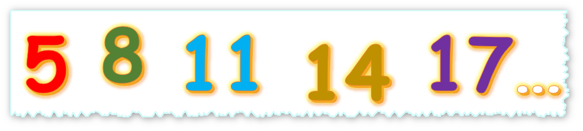
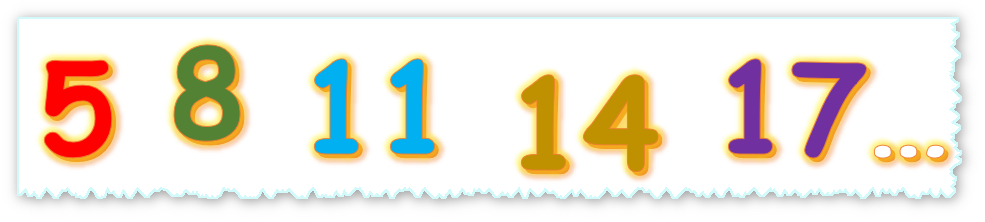

Diccionario
Progresión aritmética



Vamos a comenzar a aprender diferentes contenidos matemáticos que se aplican en economía.
Las progresiones son unas herramientas muy útiles, tienen distintas aplicaciones, una de las más utilizadas a diario es la que empleamos para calcular el interés que hay que pagar cuando nos conceden un préstamo de dinero.
Las progresiones más sencillas se pueden crear partiendo de una cantidad inicial, a la que vamos sumando una cantidad constante a cada término.
Vamos a conocer las progresiones aritméticas. ¿Te animas?
Vamos a aprender contenidos matemáticos
que se aplican en economía.
Las progresiones son unas herramientas.
Tienen distintas aplicaciones.
Una de las más utilizadas a diario
es la que empleamos para calcular el interés
que hay que pagar cuando nos conceden un préstamo de dinero.
Las progresiones más sencillas se pueden crear
partiendo de una cantidad inicial,
a la que vamos sumando una cantidad constante a cada término.
Vamos a conocer las progresiones aritméticas.
¿Te animas?
Ya te has dado cuenta de que las cosas no siempre cuestan lo mismo.
Es decir, el valor del dinero va cambiando.
Por ese motivo, cuando llevamos nuestro dinero al banco,
es como si se lo prestamos durante un tiempo determinado.
Por ello, a cambio esperamos que el banco nos devuelva más de lo depositado.
Son los denominados intereses.
Veamos con un ejemplo:
Imagina que tienes $8000 €$ y que los quieres invertir en un producto financiero
que te dará el 5% de interés anual, durante los próximos 5 años.
¿Qué cantidad de dinero le habrán generado los intereses en ese periodo de tiempo?
Con lo que sabemos de progresiones aritméticas podremos averiguarlo.
Vamos a verlo, los elementos que intervienen en una operación de interés simple son:
$C_i=$ Capital inicial invertido ($8000€$)
$t=$ Plazo de inversión (5 años)
$i=$ Interés simple (Cantidad de dinero que queremos calcular)
$r=$ Redito anual (5%)
Quiere decir, que durante un año, obtendremos $5€$ de beneficio por cada $100$ de inversión.
Por tanto hacemos la división: \(\dfrac{5}{100}=0,05\), quiere decir que obtendremos $0,05 € $ por $1 €$ de inversión al final de cada año.
Con estos datos, podemos aplicar lo que sabemos sobre progresiones aritméticas
para intentar calcular la cantidad de dinero que se irá generando cada año por $1 €$ de inversión.
Vamos a analizarlo:
1º año, el interés generado será: $0,05·8000=400 €$, con lo que en total tendrá 8400€
2º año, el interés generado será: $0,05·8000=400 €$, ya que el interés generado no se vuelve a reinvertir. En total: 8800 €
3º año, el interés generado será: $0,05·8000=400 €$, en total: 9200 €
4º año, el interés generado será: $0,05·8000=400 €$, en total: 9600 €
5º año, el interés generado será: $0,05·8000=400 €$, en total 10000 €
Fíjate como las cantidades 8400 €, 8800 €, 9200 €,9600 €, 10000€,
siguen una progresión aritmética de razón 400.
Así que podríamos realizar este cálculo más rápidamente utilizando la expresión matemáticas de las progresiones aritméticas.
En el 5º año, la expresión sería: $C_f=8000+400·5$=8000+1600=2000 €. Donde $C_f$ significa "Capital final".
En general, el capital final si el tiempo está expresado en años, sería:
$C_f=C_i+\dfrac{C_i·r·t}{100}$
Si nos centramos sólo en el interés generado, tenemos las siguientes expresiones:
$i=\dfrac{C_i·r·t}{100}$ para el tiempo expresado en años.
$i=\dfrac{C_i·r·t}{12·100}$ para el tiempo expresado en meses.
$i=\dfrac{C_i·r·t}{365·100}$ para el tiempo expresado en días.
Comprueba si has comprendido bien el cálculo del interés simple, ponte a prueba con una cuantas "Operaciones bancarias".
¡Ánimo! Seguro que lo haces muy bien.
Resuelve cada uno de los problemas que se plantean y anota el resultado de cada uno.
Al final, encontrarás un pequeño acertijo que cuya solución te dará la clave para abrir el candado.
Calcula el capital que hay que depositar en un banco que ofrece un interés anual de un $5$ % para obtener $4000$€ de interés al cabo de $20$ años.
Calcula el capital que hay que depositar en un banco que ofrece un interés anual de un $2$ % para obtener $500$ € de interés al cabo de $100$ días.
Calcula el capital que hay que depositar en un banco que ofrece un interés anual de un $2$ % para obtener $800$ € de interés al cabo de $6$ meses.
Calcula el tiempo que hay que depositar en un banco que ofrece un interés anual de un 10 % para obtener 1000 € de interés al cabo de 5 años, partiendo de un capital inicial de 2000 €.
Escribe por orden la cantidad de cifras que tiene cada uno de los resultados que has obtenido
Recuerda la expresión para calcular el interés simple. ¿La estás aplicando bien? ¿Has identificado correctamente cada variable?
¿Te has equivocado en algo al hacer la actividad?
Cuando queremos aprender algo, lo normal es equivocarse al principio. Fallar forma parte de aprender. ¿Recuerdas cuando montaste en bici por primera vez? ¿o cuando intentabas nadar en el agua? Seguro que al principio no fue fácil, pero cada vez que fallabas, lo intentabas de nuevo. Con cada fallo aprendemos del error y lo mejoramos para la vez siguiente.
Para aprender de tus errores sigue estos consejos:
1. Me doy cuenta de en qué parte he fallado.
2. Busco la forma de mejorar ese error.
3. Lo intento de nuevo.
4. Entiendo que el error es importante para aprender.
No lo olvides: cuando te equivocas una vez, aprendes para el siguiente intento.
Observa las siguientes sucesiones:
1,2,3,4,5,6...
2,4,6,8,10...
1,3,5,7,9,11...
Al ver los primeros términos eres capaz de intuir los siguientes pues se detecta el patrón que se sigue.
Así en la primera de las sucesiones se observa que se obtiene el siguiente término sumando 1 al anterior,
mientras que en las dos siguientes se suma 2 al anterior para obtener el siguiente.
Si en una sucesión se consigue el siguiente término sumando siempre una misma cantidad al anterior se dice que la sucesión es una progresión aritmética.
A esa cantidad constante que se suma a cada término para obtener el siguiente se le llama diferencia (d).
\( a_{n+1}=a_n +d \), de este modo \( d= a_{n+1}-a_n \)
Sería interesante conocer una ley que permita identificar cualquier término en una progresión aritmética.
Veamos si esa ley se puede deducir de los primeros términos,
como sabemos que en una progresión aritmética cada término se obtiene del anterior sumando una misma cantidad entonces
\( a_2 = a_1 + d \)
\( a_3 = a_2 + d =a_1 +d + d = a_1 + 2d \)
\( a_4 = a_3 + d =a_1 +2d + d = a_1 + 3d\)
Parece que la ley que se sigue es \( a_n=a_1+(n-1)d \),
comprobémoslo para el siguiente término \(a_{n+1}=a_n+d=a_1+(n-1)d +d =a_1+n \cdot d\) se sigue cumpliendo la regla,
por tanto podemos afirmar que el n-ésimo término de una progresión aritmética es \(a_n=a_1+(n-1)d \),
esto es lo que se llama término general de la progresión aritmética.
Retomemos los ejemplos del inicio y calculemos su término general
1,2,3,4,5,.... en esta progresión \(a_1=1\) y \(d=1\) \(a_n=1+(n-1) \cdot 1 =1+n-1=n\) luego \(a_n=n\).
2,4,6,8,10,..... \(a_1=2\) y \(d=2\) \(a_n=2+(n-1) \cdot 2 =2 +2n -2 \Rightarrow a_n=2n\)
1,3,5,7,9,11,.... \(a_1=1\) y \(d=2\) \(a_n=1+(n-1) \cdot 2 =1 +2n -2 \Rightarrow a_n=2n-1\)
Término general conocido un término y la diferencia
Si en una progresión aritmética conocemos uno de sus términos y la diferencia se puede calcular el término general,
veamos algunos ejemplos:
Término general conocidos dos términos
Para hallar el término general conocidos dos términos tenemos que conocer la relación entre esos términos.
Si \(a_i=a_1+(i-1)d\) y \(a_j=a_1+(j-1)d\) entonces \(a_j-a_i=a_1+(j-1)d-(a_1+(i-1)d \), simplificando la expresión se tiene que \(a_j-a_i=(j-i)d\).
Ejemplo: Calcula el término general de una progresión aritmética de la que se sabe que \( a_3=5\) y \( a_{12}=32\).
\(a_{12}-a_3=(12-3)d \Rightarrow 32-5=9d \Rightarrow 27=9d \Rightarrow d=\dfrac{27}{9}=3\)
\(a_n=a_1+(n-1)d \Rightarrow a_3=a_1+2d \Rightarrow 5=a_1+2·3 \Rightarrow a_1=-1\)
\(a_n=-1+(n-1)·3 \Rightarrow a_n=-1+3n-3 \Rightarrow a_n=3n-4\)
Si se conoce el término general de una progresión aritmética se pueden identificar cualquiera de los términos, basta con sustituir.
Si el término general de una progresión aritmética es \(a_n=2n+3\)
¿Cuál sería el primer término de la progresión?
¿y el quinto?¿y el vigésimo?
Se sustituye en la fórmula del término general para obtener el término deseado.
Para \(a_1\), \(a_1=2 \cdot 1 +3 =5\) luego el primer término será \(a_1=5\).
Para \(a_5\), \(a_5=2 \cdot 5 +3 =10+3=13\) luego \(a_5=13\).
Para \(a_{20}\), \(a_{20}=2 \cdot 20 +3 =40+3=43\) por tanto \(a_{20}=43\).
Si conocemos el término general de una progresión aritmética podemos hallar cualquiera de los términos que la forman.
Al igual que se puede hallar el término general en una progresión aritmética, también se puede conocer la suma de sus primeros términos.
Como se vio para encontrar el término general \( a_2=a_1+d\) \(a_3=a_1+2d\) …. \(a_n=a_1+(n-1)·d\).
Sumar los primeros n términos de una progresión aritmética es
\(S_n=a_1+a_2+a_3+.....+a_n \Rightarrow S_n=a_1+a_1+d+a_1+2d+.....+a_1+(n-1)d\)
Si realizamos la suma en orden natural e inverso, como hizo Gauss con los 100 primeros naturales, se tiene
\( \begin{array}{lclclclcl} S_n & = & a_1 & + & a_1+d & +...+ & a_1+(n-2)d & + & a_1+(n-1)d \\ S_n & = & a_1+(n-1)d & + & a_1+(n-2)d & +...+ & a_1+d & + &a_1 \\ \hline \\ 2S_n & = & 2a_1+(n-1)d & + & 2a_1+(n-1)d & +...+ & 2a_1+(n-1)d & + & 2a_1+(n-1)d \end{array} \)
Observa que se suman n veces lo mismo por tanto
\( 2Sn=(2a_1+(n-1)d)·n =(a_1+a_1+(n-1)d)·n = (a_1+a_n)\cdot n\)
Luego \( \boxed{ Sn=\dfrac{a_1+a_n}{2}\cdot n} \)
Esto permite conocer la suma de los n primeros términos de una progresión aritmética.
Los 100 primeros números 1,2,3,4,5,... eso que le pidieron a Gauss que sumara,
están en progresión aritmética por tanto con la fórmula que hemos encontrado se puede averiguar la suma de los primeros naturales que queramos.
\(S_{100}=\dfrac{1+100}{2}\cdot 100= \dfrac{10100}{2}=5050\)
¿Cuál es la suma de los 100 primeros números pares?
2,4,6,8,.... los números pares están en progresión aritmética cuyo término general lo hemos calculado anteriormente \(a_n=2n\)
\(a_1=2\) y \(a_{100}=2 \cdot 100 = 200\)
\(S_{100}=\dfrac{2+200}{2} \cdot 100 =\dfrac{20200}{2}=10100\)
Otra forma de verlo es que los 100 primeros pares es 2 por la suma de los 100 primeros naturales, por tanto \(2·5050=10100\)
Imagina que tienes un capital $C$, y lo inviertes a un rédito $r$ durante $t$ años.
Calcula la sucesión formada por los capitales totales al final del primer año , al final del segundo año , al final del tercer año,......., al final del año t.
¿Qué tipo de sucesión es? ¿Cuál es la diferencia?
Realiza en tu cuaderno cómo quedaría cada año el capital total en función del capital inicial $C$ y el rédito $r$.
Hazlo para tantos años como necesites, hasta identificar el patrón.
Esta lista de cotejo te ayudará a comprobar si tu cálculo es correcto.
Obra publicada con Licencia Creative Commons Reconocimiento No comercial Compartir igual 4.0